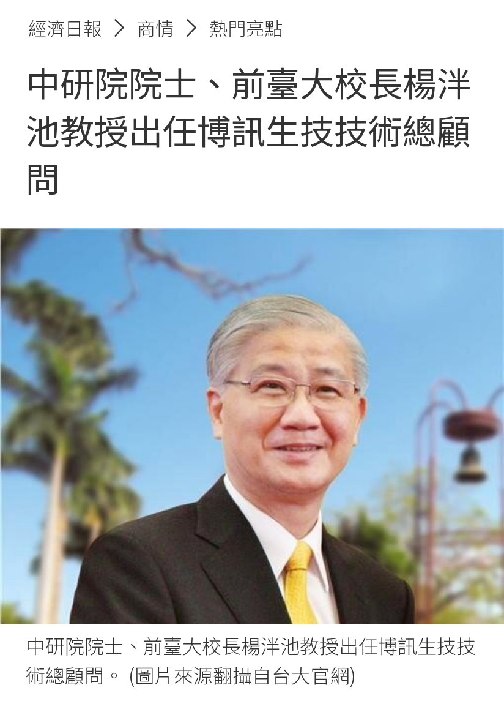
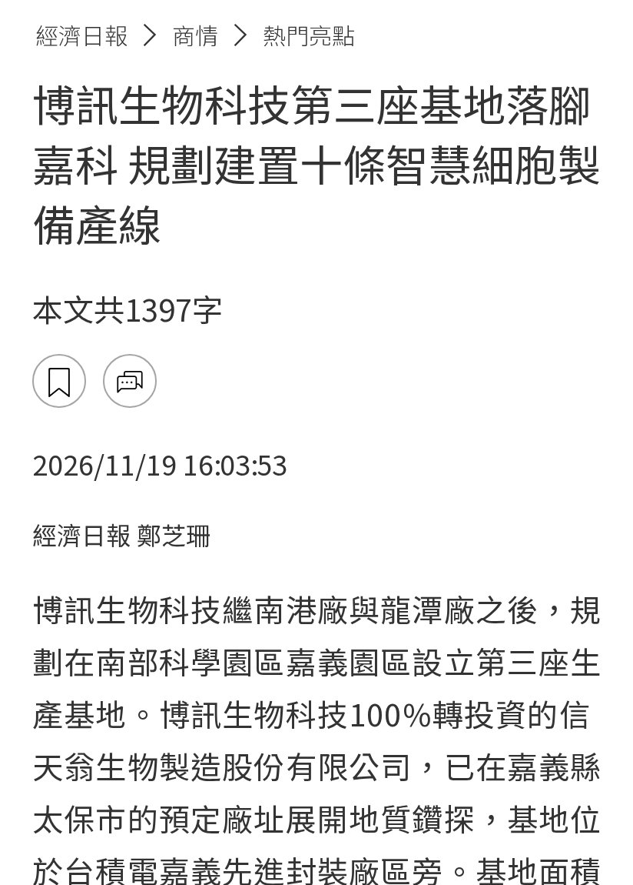
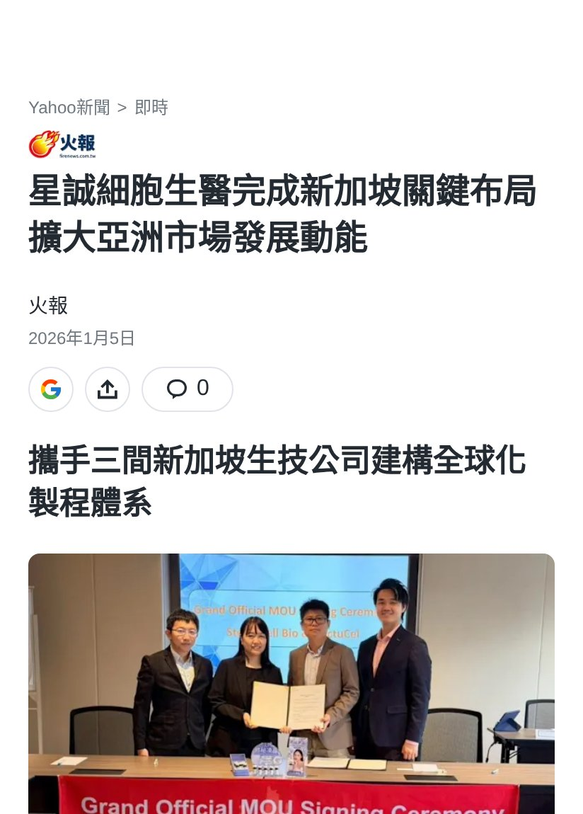
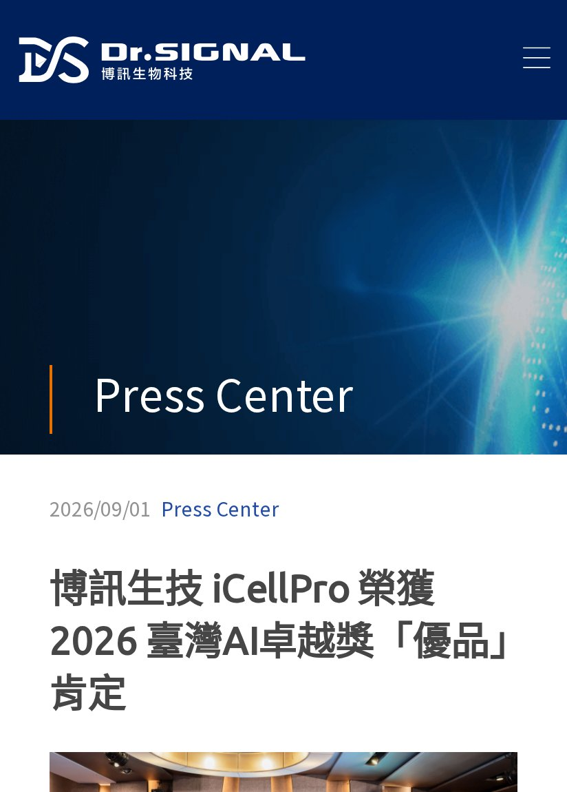

KuME
IN THE NEWS
媒體怎麼報導
研發與製造夥伴：星誠細胞生醫・博訊生物科技

中研院院士、前臺大校長楊泮池出任博訊生技技術總顧問經濟日報｜2026/09/03 點圖看原文 ↗星誠細胞生醫攜手亞果生醫 啟動策略聯盟經濟日報｜2026/08/26 點圖看原文 ↗
博訊第三座基地落腳嘉科 規劃建置十條智慧細胞製備產線經濟日報｜2026/11/19 點圖看原文 ↗
星誠細胞生醫完成新加坡關鍵布局 擴大亞洲市場Yahoo新聞｜2026/01/05 點圖看原文 ↗獲漢民許金榮加持 博訊生技11月啟動登興櫃MoneyDJ｜2026/05/18 點圖看原文 ↗
博訊 iCellPro 榮獲 2026 臺灣AI卓越獎「優品」博訊官網｜2026/09/01 點圖看原文 ↗報導版權屬各媒體所有，點圖前往原文
🎁 領取VIP體驗$1900